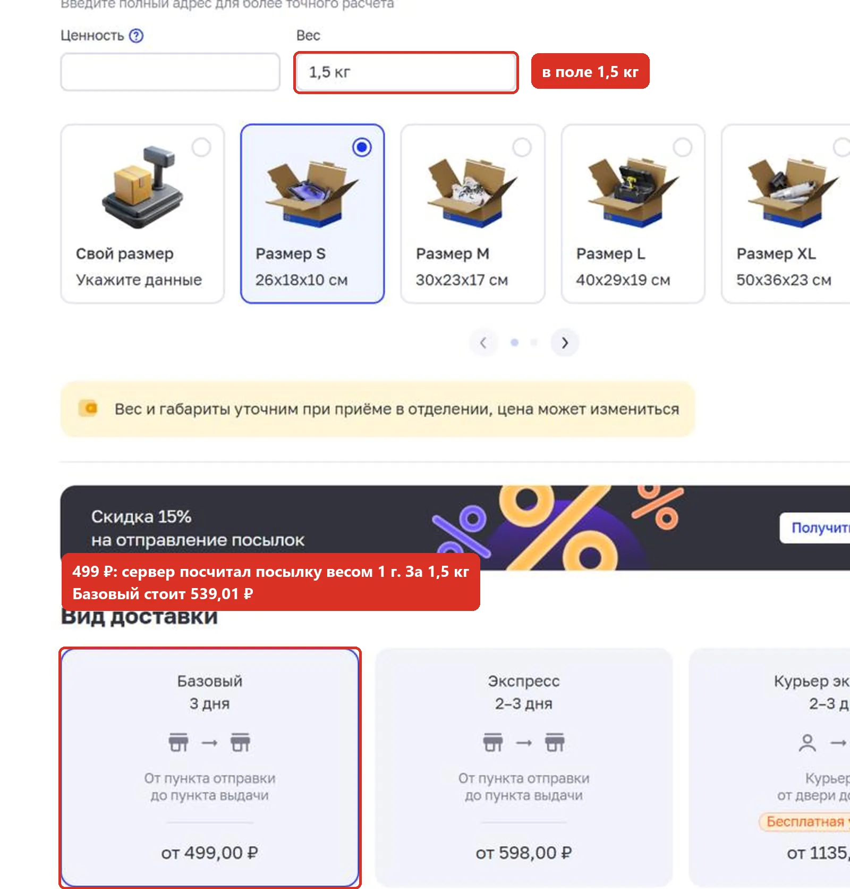
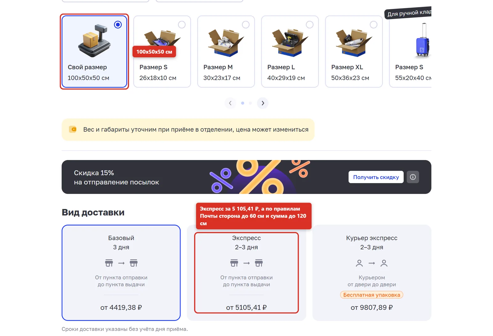
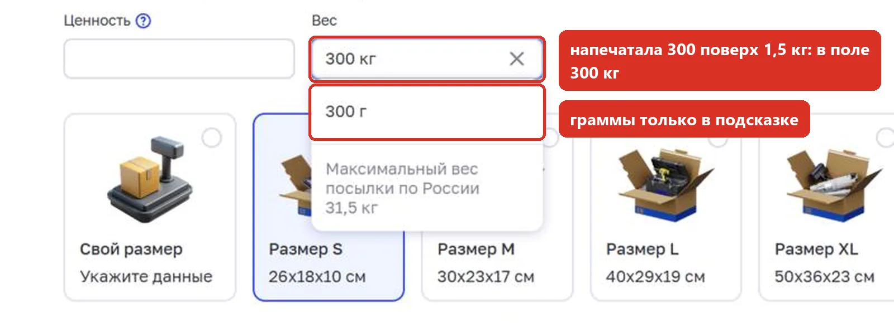
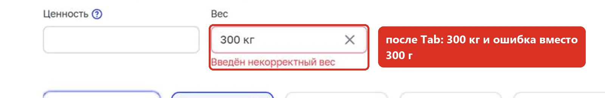
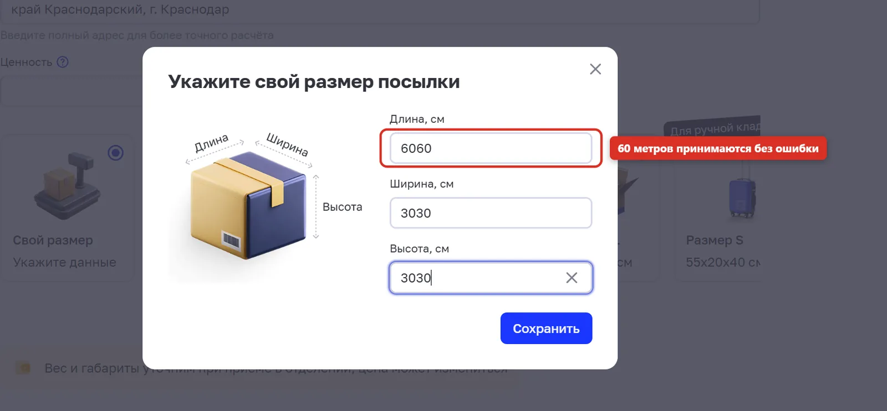
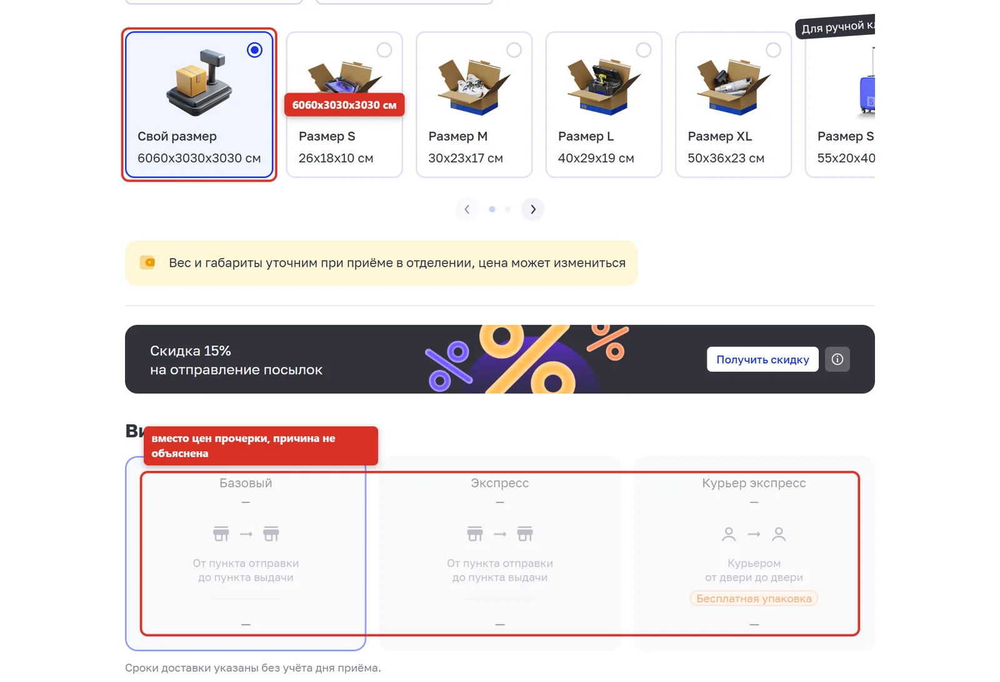
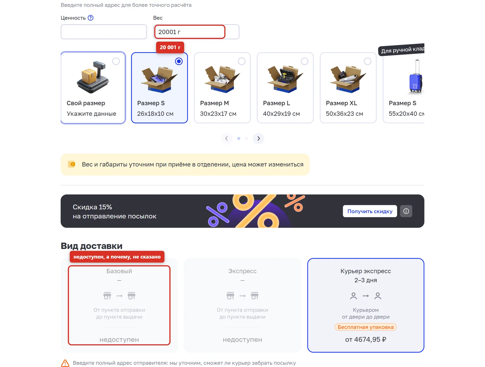
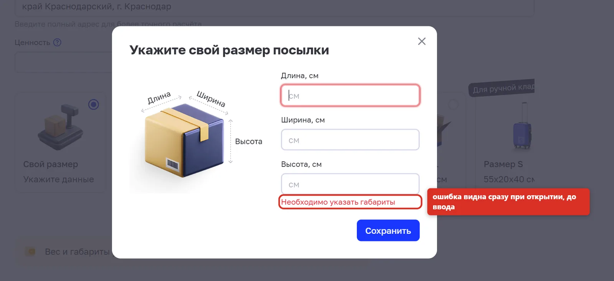
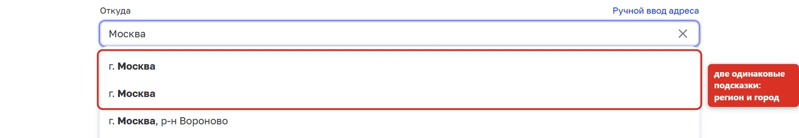

Калькулятор посылок (Почты России)
Что проверяла: форму расчёта стоимости посылки по России: поля "Откуда", "Вес", "Свой размер", "Ценность" и то, какие виды доставки и цены она показывает. Форму не отправляла: калькулятор считает сразу.
Как проверяла: требования взяла из правил Почты в справке сайта, выписала границы и группы значений, каждую границу проверила с двух сторон. Когда цена выглядела подозрительно, смотрела в DevTools, какой вес уходит на сервер и что он считает.
- Граничные значения
- Классы эквивалентности
- Проверка по требованиям
- Исследовательское тестирование
- DevTools: Network
22
проверки по чек-листу12
пройдено8
дефектов40-177 ₽
на столько главный дефект занижает ценуТребования, по которым проверяла
| Вид доставки | Вес | Размер | Ценность |
|---|---|---|---|
| Базовый | до 20 кг в любом отделении; тяжелее, только в специализированных | до 10 кг: сумма сторон до 120 см, сторона до 60 см; до 20 кг: сумма до 300 см | |
| Экспресс | до 20 кг | сторона до 60 см, сумма до 120 см | |
| Курьер экспресс | до 31,5 кг | сторона до 150 см, сумма до 300 см | до 50 000 ₽ |
Чек-лист
| № | Поле | Проверка | Ожидаю | Получила | Итог |
|---|---|---|---|---|---|
| 1 | Откуда | Подсказки по запросу "Москва" | Варианты различимы | Две одинаковые строки "г. Москва" | дефект #7 |
| 2 | Вес | 200 г, из Москвы в Краснодар | Цена и срок для трёх видов доставки | 499 / 598 / 1 135 ₽ | пройдено |
| 3 | Вес | 1 г, нижняя граница | Минимальный тариф | 499 ₽ | пройдено |
| 4 | Вес | 0 г | Сообщение об ошибке | "Необходимо выбрать вес" | пройдено |
| 5 | Вес | -5 | Минус не вводится | Не вводится | пройдено |
| 6 | Вес | Буквы | Не вводятся | Не вводятся; "б" и "ю" становятся запятой, это подсказка для русской раскладки | пройдено |
| 7 | Вес | 20 000 г, граница Базового и Экспресса | Доступны все виды | Доступны все виды | пройдено |
| 8 | Вес | 20 001 г | Базовый и Экспресс недоступны, с объяснением | Недоступны без объяснения | дефект #5 |
| 9 | Вес | 31 500 г, предел Курьер экспресса | Курьер экспресс доступен | Доступен | пройдено |
| 10 | Вес | 31 501 г | Сообщение об ошибке | "Введён некорректный вес" | пройдено |
| 11 | Вес | 15-значное число | Сообщение об ошибке | "Введён некорректный вес" | пройдено |
| 12 | Вес | 1,5 (дробное значение, кг) | Расчёт за 1 500 г | В поле 1,5 кг, расчёт за 1 г (4 попытки из 5) | дефект #1 |
| 13 | Вес | 300 поверх выделенного "1,5 кг" | 300 г | 300 кг и ошибка | дефект #3 |
| 14 | Свой размер | Открыть окно размеров | Ошибок до ввода нет | Ошибка видна сразу | дефект #6 |
| 15 | Свой размер | 60x30x30, граница Экспресса | Доступны все виды | Доступны все виды | пройдено |
| 16 | Свой размер | 61x30x29: сторона 61 см | Экспресс недоступен | Экспресс доступен | дефект #2 |
| 17 | Свой размер | 60x31x30: сумма 121 см | Экспресс недоступен | Экспресс доступен | дефект #2 |
| 18 | Свой размер | 100x50x50 | Экспресс недоступен | Экспресс за 5 105,41 ₽ | дефект #2 |
| 19 | Свой размер | 6060x3030x3030 | Ошибка в окне размеров | Принято, потом вместо цен прочерки | дефект #4 |
| 20 | Ценность | 50 000 ₽, предел Курьер экспресса | Принимается | Принимается | пройдено |
| 21 | Ценность | 50 001 ₽ с Курьер экспрессом | Сообщение об ошибке | "Максимальная сумма объявленной ценности 50 000 ₽" | пройдено |
| 22 | Доступность | Подписи у полей "Ценность" и "Вес" | Подпись связана с полем | Связи нет | дефект #8 |
Баг-репорты
#1 В поле "1,5 кг", а цена считается за посылку весом 1 г
Шаги
- Открыть калькулятор: посылка, из Москвы в Краснодар, вес 300 г.
- Очистить поле "Вес", ввести 1,5 и нажать Tab.
- Если расчёт верный (539,01 ₽), напечатать поверх 300, нажать Tab, очистить, ввести 300 и Tab, затем снова очистить и ввести 1,5.
Ожидаемый результат
Поле "1,5 кг", расчёт за 1 500 г: Базовый 539,01 ₽, Экспресс 643,99 ₽, Курьер экспресс 1 312 ₽.
Фактический результат
Поле показывает "1,5 кг", а в адрес страницы уходит weight=1.5, и сервер считает посылку весом 1 г: Базовый 499 ₽, Экспресс 598 ₽, Курьер экспресс 1 135 ₽. Человек видит цену на 40-177 ₽ ниже настоящей.
Что предлагаю
Хранить вес в одной единице (граммах) и пересчитывать подпись из неё, а не наоборот. Показывать рядом с ценой, за какой вес она посчитана.
Поле "Вес": 1,5 кг Адрес страницы: /shipment?...&weight=1.5 Ответ calculator.calculate-cost-time-text: "title": "Пересылка посылка весом 1 г из Москва в Краснодар" "totalCostInRubles": 499.00 Тот же ввод, когда расчёт верный: /shipment?...&weight=1500, "1 кг 500 г", Базовый 539,01 ₽


#2 Экспресс предлагается для коробок больше допустимых размеров
Шаги
- Открыть калькулятор: посылка, из Москвы в Краснодар, вес 1 000 г.
- Выбрать "Свой размер", ввести 100x50x50 см, нажать "Сохранить".
- Посмотреть блок "Вид доставки".
Ожидаемый результат
По правилам Почты у посылки Экспресс любое измерение не больше 60 см, сумма трёх не больше 120 см. Экспресс недоступен, рядом причина.
Фактический результат
Экспресс доступен, цена 5 105,41 ₽. То же при 61x30x29 (сторона 61 см) и 60x31x30 (сумма 121 см): калькулятор не проверяет размеры для Экспресса.
Что предлагаю
Проверять ограничения по размерам для каждого вида доставки и писать причину на карточке: "Экспресс: сторона до 60 см, сумма до 120 см".


#3 "300", напечатанное поверх "1,5 кг", становится 300 кг
Шаги
- Ввести в поле "Вес" 1,5 и нажать Tab: в поле "1,5 кг".
- Выделить значение в поле (тройной клик) и напечатать 300.
- Нажать Tab.
Ожидаемый результат
300 г, расчёт цены.
Фактический результат
В поле "300 кг", граммы видны только в выпадающей подсказке. После Tab: "Введён некорректный вес", цены пропадают. Обычный способ исправить значение приводит к ошибке.
Что предлагаю
Не переносить единицу из старого значения в новое. Целое число без запятой считать граммами, как при первом вводе.




#4 Окно размеров принимает стороны по 60 метров без ошибки
Шаги
- Выбрать "Свой размер".
- Ввести 6060, 3030 и 3030 см, нажать "Сохранить".
Ожидаемый результат
Сообщение в окне: максимальный размер посылки.
Фактический результат
Окно закрывается, карточка показывает "6060x3030x3030 см", а вместо цен прочерки. Почему, не сказано.
Что предлагаю
Ограничить поля размеров (например, до 150 см, как у Курьер экспресса) и показывать ошибку в окне до сохранения.




#5 При весе больше 20 кг Базовый и Экспресс "недоступны" без объяснения
Шаги
- Ввести в поле "Вес" 20001 и нажать Tab.
- Посмотреть блок "Вид доставки".
Ожидаемый результат
Причина рядом с видом доставки. В справке Почты сказано, что базовые посылки тяжелее 20 кг принимают в специализированных отделениях: об этом стоит написать.
Фактический результат
На карточках Базовый и Экспресс только слово "недоступен". Форма сама переключает вид доставки на Курьер экспресс и не возвращает обратно, когда вес снова маленький: внизу остаётся цена курьера (1 312 ₽ за 1,5 кг вместо 539,01 ₽ за Базовый).
Что предлагаю
Писать причину ("до 20 кг", "тяжелее 20 кг: только в специализированных отделениях") и не менять выбор вида доставки без действия человека.


#6 Окно "Свой размер" показывает ошибку сразу при открытии
Шаги
- Выбрать карточку "Свой размер".
Ожидаемый результат
Пустые поля без ошибок; ошибка только после попытки сохранить.
Фактический результат
Под полями сразу "Необходимо указать габариты", поле "Длина" подсвечено красным.
Что предлагаю
Показывать ошибку после нажатия "Сохранить" или после ухода из поля.


#7 Две одинаковые подсказки "г. Москва"
Шаги
- В поле "Откуда" напечатать "Москва".
Ожидаемый результат
Варианты различимы.
Фактический результат
Первые две строки одинаковые: "г. Москва". По ответу сервера это Москва как регион и как город, на экране разницы не видно.
Что предлагаю
Оставить один вариант или подписать их: "Москва (город)" и "Москва и область".


#8 Поля "Ценность" и "Вес" без подписи для экранного диктора
Шаги
- Открыть калькулятор и проверить поля в DevTools.
Ожидаемый результат
Видимая подпись связана с полем (label for или aria-labelledby), диктор читает "Вес".
Фактический результат
У полей insuranceSum и weight нет связанной подписи и aria-label. Диктор прочитает "поле ввода, 300 г" без названия. Кроме того, поле "Вес" ссылается через aria-describedby на weightError, но элемента с таким id нет: текст ошибки с полем не связан. В окне размеров подписи связаны правильно.
Что предлагаю
Связать подписи с полями: label for="weight" и label for="insuranceSum".
input#insuranceSum labels: 0, aria-label: нет, aria-labelledby: нет
input#weight labels: 0, aria-label: нет, aria-labelledby: нет
aria-describedby: weightError, элемента #weightError на странице нет
input[name=length] label: "Длина, см" (связана)Калькулятор хорошо держит явные границы: минус, буквы, 0 г, больше 31,5 кг, ценность больше 50 000 ₽. Слабые места: поле веса само решает, граммы это или килограммы, и иногда показывает одно, а считает другое; калькулятор не сверяет размеры с правилами Экспресса.